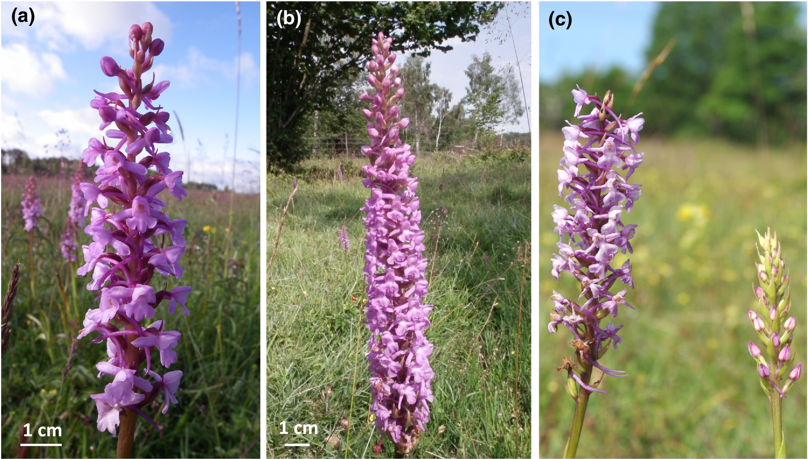

data <-
data |>
mutate(fitness = ______ * ______)Regression modelling in R (and other things)
Exercise 6
Get RStudio setup
Each time you start a new exercise, you should:
- Make a new folder in your course folder for the exercise (e.g.
biob11/exercise_6) - Open RStudio
- If you haven’t closed RStudio since the last exercise, I recommend you close it and then re-open it. If it asks if you want to save your R Session data, choose no.
- Set your working directory by going to Session -> Set working directory -> Choose directory, then navigate to the folder you just made for this exercise.
Instructions
- Create a new Rmarkdown document (File -> New file -> R markdown..). Give it a clear title. Delete any of the demo text not in the YAML frontmatter.
- Download the dataset and move it into your working directory folder.
- Load the
tidyverseandinferpackages. - Import the dataset using
read_csv(). - Use Headings so that your document is clear and easy to follow.
- Write your answers to the questions as text in the document.
What approach to use?
You need to decide whether to use a hypothesis test or a confidence interval. During the exercise, you should use both approaches at some point.
You will need to use past exercies, slides, the course book and the infer webpage for help with implementing your ideas. Try to use them first before asking for help. But if you’re stuck, then please ask!
Öland Orchids

Gymnadenia conopsea and Gymnadenia densiflora are two closely related perennial orchids that differ in key floral traits affecting pollination and in their primary pollinator species. This dataset was collected from 10 populations on Öland by Chapurlat et al. (2020). For more information, have a look at the paper.
The dataset can be downloaded as a csv file from GitHub.
The variables are as follows:
species: species name (Gymnadenia conopsea or Gymnadenia densiflora)population: population identifier where the plant was sampledplant_height_cm: plant height in centimetrescorolla_area_mm2: corolla (flower) area in square millimetresspur_length_mm: spur length in millimetresfirst_flower_day: day of year (Julian day) when the first flower was observed (1 = 1st Jan)flowers: number of flowers on the plantfruits: number of fruits produced on the plantmean_fruit_mass_mg: mass per fruit (mean of three fruits) in milligrams
Floral correlations
The researcher’s want to know if there are correlations between key phenotypic traits. Correlations between traits can generate indirect selection: selection on one trait may cause a correlated response in another, even if that other trait is not under direct selection.
Selection gradients
A selection gradient quantifies the relationship between a trait and fitness, measuring the strength and direction of natural selection acting on that trait. Fitness is an individual’s contribution to the next generation, typically measured as reproductive success. Directional (linear) selection can be captured well using the slope of a linear regression.
While the authors did not quantify fitness directly, they did measure two traits that once combined provide a good estimate of a plant’s reproductive success. Fruit mass is likely a product of the number of seeds within a fruit, so mean_fruit_mass_mg \(\times\) fruits will give us a variable that is a proxy for number of seeds, which is a good estimate of an individual’s fitness.
Logistic predictions
Suppose we want to build a model to help amateur naturalists identify which of the two species they are looking at.
Submit your work
References
Chapurlat, E., I. Le Roncé, J. Ågren, and N. Sletvold. 2020. Divergent selection on flowering phenology but not on floral morphology between two closely related orchids. Ecology and Evolution 10:5737–5747.
Footnotes
note that this has been coded as two different populations in the dataset, one for each species. Look at the data to see what they’re called↩︎